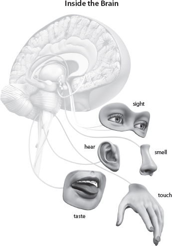
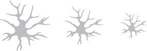

QUESTION: What is the power of the doing nature of this active reach step?
|
15 Active Reach Step 5 |
Active reaches are the challenging but fun part of this plan because they are actions and exercises you say and/or do during the course of the day and evening. You in essence practice using the new healthy thought until it becomes automatized like a good habit (see chap. 8). You decide what these active reaches will be in steps 4 and 5 each day and then you monitor, evaluate, and change them each subsequent day of the 21-Day Brain Detox Plan.
The Doing Gets the Results
It is the doing nature of the active reaches that results in ungluing the branches from your thought trees. Steps 1–4 have loosened and weakened the branches, but step 5 literally destroys the branches. Here is how this works, and why the active reaches are so important.

The branches with all the memories and emotions are attached to a cell body with a type of protein that is like glue—like branches attached to a tree trunk. There is more glue on the branches that are used the most, so when you shift your attention from the negative, toxic thought to the positive, healthy, new replacement thought, three things happen.

|
QUESTION: What is the power of the doing nature of this active reach step? |
Your Faith Manifests
The active reach is the stage in which you reach out beyond toxic thinking by applying the principle, “Faith without works is dead” (James 2:20). This is where your faith manifests and you actually do something with the detoxing that has been going on until now—you reach further. It is the final step to switching on the brain and detoxing. But you can’t reach with success without the foundation created in the previous steps. Only when you have been through all of those steps and completed the process can you move forward, changed in a positive direction.
An active reach is not just the decision to forgive; it is the actual forgiving. It is not just the decision to believe that God heals; it is the actual believing. It is not just the decision to stop worrying about your children and trust they will make the right decisions because God is watching over them; it is actually stopping the worrying. It is not just confessing God will meet your needs; it is the actual believing. It is not just the decision to lose weight; it is the actual lifestyle change to lose the weight. It is not just the decision to stop dwelling on the past; it is the actual stopping the dwelling on the past. It is not just the decision not to talk negatively; it is the actual not talking negatively no matter how tempting it is to do so. This is when you reach beyond where you are.
Moving through the Sequence
When you have moved through the 5-Step sequence—gather, reflect, write, revisit, active reach—to detox your thoughts and simultaneously build the healthy thought, you will have built a secure foundation for change, health, and wholeness. It will not work, however, if you just mouth a positive confession without a solid foundation. This creates what science calls “cognitive dissonance.”
Building a structure for change on a faulty foundation will never create persistent patterns in your brain to bring you peace. Instead, it will fall down when the proverbial wolf (trouble) blows down your house of sticks (confessions without foundation).
Integrity in the Brain
In the brain, building a foundation is called having integrity, which means you are using your words and actions to line up the thought with its beliefs and feelings. Neuroscientifically, the progression goes like this:
You can be presented with all the reason, logic, scientific evidence, and just plain common sense in the world, but you won’t believe something is true unless your brain’s limbic system—the central location of your emotions—allows you to feel that it is true. So you can’t imagine and feel—change your brain structurally—one way and speak something different, because if you do, there will be a lack of integrity operating in your brain, which will leave an overwhelming feeling of being out of control.
Active Reaching Helps You Feel Truth
The active reach helps you feel whether or not something is true. It helps you line up the thought (imagination) with the confession (words coming out of your mouth) and action. Clearly, then, “Confess with your mouth the Lord Jesus and believe in your heart” (Rom. 10:9, emphasis mine) becomes the principle operating here.
Here is an example of active reach: You are working on the toxic thought of saying—out loud or in your mind—a lot of could-have, would-have, should-have, if-only statements. Your active reach step is saying, “I will not say this, I am putting the past behind me”; or visualizing the situation, event, or issue disappearing in a puff of smoke; or quoting a verse that’s applicable; or doing something fun like smiling, yawning, or tapping your foot.
A second example: If the toxic thought is that you keep trying to change the past by playing movies in your mind, thinking that if you did that then this would have happened, and then this should have happened, and then you wouldn’t have . . . active reach is to say, “I choose to stop playing this movie” or “I am switching that movie off,” quoting a Bible verse that applies, or praying a prayer you have created for that situation.
A third example: The toxic thought is that you find it hard to accept that something is over, done, and in the past, and you won’t let it go. The active reach is to visualize the walls of Jericho falling down and see those walls as this past experience; telling yourself “I can’t” is a decision, but so is “I can”—choose “I can” or quote a Scripture.
You can’t trick yourself, and you can’t trick God. After all, you are made in his image and are, therefore, exceptionally intelligent. Now using your exceptional intelligence, look at the simple summary below of how to do the 21-Day Brain Detox Plan and start renewing your mind and rewiring your brain.
Summary for the 21-Day Brain Detox Plan
Below is a guide to help you master the 21-Day Brain Detox.
Learning to Break Down the Toxic Thought
1. Gather (1–2 minutes)
• Purpose: bring thought into consciousness
• Example: worrying about money
• Don’t forget, it is the Holy Spirit who “will guide you into all the truth” (John 16:13 NIV), so let him—and not yourself or someone else—make the decision about what you need to renew.
• Activity: go to chapter 11 for all the step 1 gather questions to guide you.
2. Focused Reflection (1–2 minutes)
• Purpose: loosen up branches
• Activity: review chapter 12
3. Writing (1–2 minutes)
• Purpose: start shaking the branches to loosen the glue
• Activity: review chapter 13
4. Revisit (1–2 minutes)
• Purpose: shift the glue to the new healthy thought
• Activity: review chapter 14
5. Active Reach (1–2 minutes)
• Purpose: start melting down the branches
• Activity: review chapter 15
Learning to Build Up the Healthy Thought
Now let’s look at the parallel building-up process, which you do at exactly the same time as you do the breaking-down process to balance the negative with the positive. You don’t want to get stuck in the negative—toxicity—so you immediately bring balance to the situation.
1. Gather
• As you identify the toxic thought in the breaking-down process, you immediately, prayerfully, consciously think of the replacement thought. For example: “My God will supply every need of yours according to his riches in glory in Christ Jesus” (Phil. 4:19 ESV). (See chap. 11.)
2. Focused Reflection
• Grow and integrate healthy branches by reflecting on the positive and not just dwelling on the negative. (See chap. 12.)
3. Write
• Add more information and links with other branches by writing the positive alongside the negative. (See chap. 13.)
4. Revisit
• You are doing the same thing in the breaking-down and building-up processes here. The steps cross over because you are planning the solution to replace the problem. This starts stabilizing the branches to firm up the “glue” bonds. (See chap. 14.)
5. Active Reach
• This is the same step as in the breaking-down process, but here you actually do the active reaches. This strengthens the new thought branches. (See chap. 15.)
Repeating steps 1 through 5 daily for about seven minutes eventually eliminates the toxic tree and stabilizes the healthy tree. Like the Scripture says in Mark 11:22–23, “You can say to this mountain, ‘May you be lifted up and thrown into the sea,’ and it will happen” (NLT).